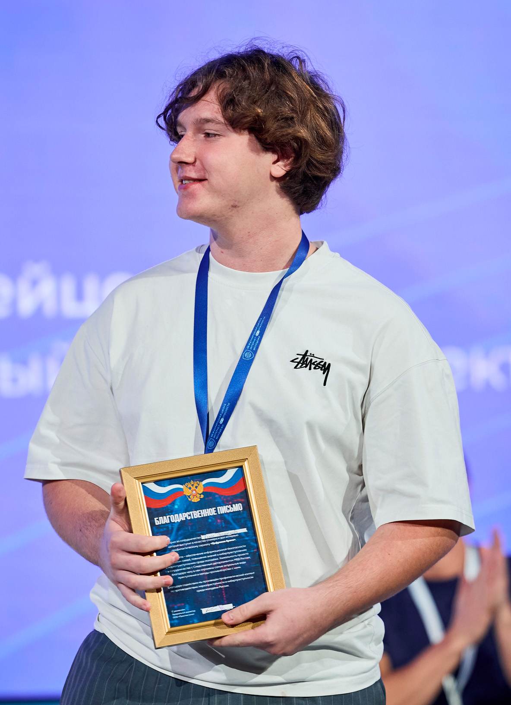

Обо мне

Занимаюсь разработкой более 5 лет. Основной стек: Python (aiogram, Flask, SQLAlchemy), Java, PostgreSQL, Docker, а также асинхронное программирование и DevOps (Nginx, Gunicorn, systemd). Проектирую архитектуру, пишу чистый код, разворачиваю на серверах.
Участник III и IV Международных школ интернет-безопасности молодежи ( в мастерской управления «Сенеж» президентской платформы «Россия - страна возможностей»), где выступал с кейсами по применению нейросетей в кибербезопасности. Неоднократный победитель и призёр региональных и всероссийских хакатонов. В рамках соревнований разрабатывал решения с использованием Q-learning и нейросетей (в том числе на ранних этапах развития этих технологий).
В последних работах — Telegram-бот для автоматизации записи (коммерческий продукт) и веб-мессенджер с вебсокетами, развёрнутый на VPS.
Ключевые компетенции
- Python (асинхронный, синхронный), Java (базовый уровень)
- Фреймворки: aiogram, Flask, SQLAlchemy
- Базы данных: PostgreSQL, SQLite, Redis
- Docker, Docker Compose, Linux-серверы
- Работа с API, WebSockets, планировщики
- Кибербезопасность (участие в профильных школах)
- Машинное обучение (Q-learning, нейросети в рамках хакатонов)
- DevOps: Nginx, Gunicorn, systemd, SSL
Готов к реализации сложных проектов, требующих внимания к деталям и надёжности. Предпочтительный способ связи — Telegram (ссылка в разделе контактов).